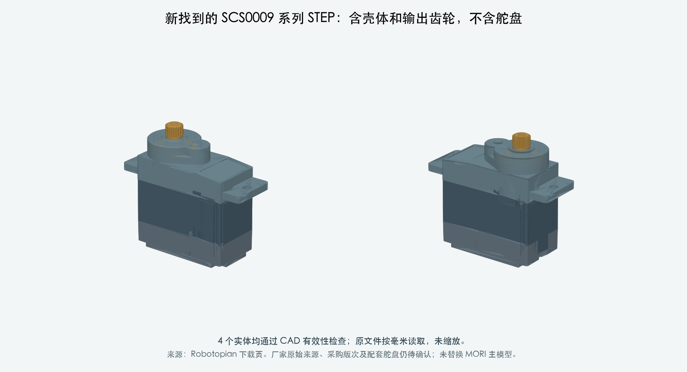

打样前工作 · 2026-10-03 · M1.47 独立资料补查
线束采用供应商按图制作
这次查到了什么
| 对象 | 已取得 | 仍缺什么 |
|---|
| SCS0009 系列 | STEP 已下载并读取：3 件壳体及输出齿轮，4 个有效实体，毫米单位。 | 不含舵盘、中心螺钉或线缆；部分轴向尺寸与当前图纸重建不同，厂家来源与采购版次待核对。 |
| SH 预压接线 | JST GAM-050：ASSHSSH28K152、SSH-003T-P0.2-H、UL1571 28AWG，明确长度基准及适用壳体。 | 实际绝缘外径、弯折条件、CAM 插座对应及 MORI 的最终长度；已补交硬件对话。 |
| JST PHR-8 / S8B-PH-K-S | 找到官方逐型号 CAD / 图纸入口。 | 下载要求身份资料并邮件领取；本次未取得 CAD，未提交表单。 |
| OV3660 相机排线 | 核对微雪中英文资源及官方商品信息。 | 原配完整 FPC 长度、厚度、补强板和接触面图仍未取得。 |
新 STEP 的独立检查

参考 STEP · 实体与尺寸检查记录 · 下载来源
MORI 主模型保持不变。该 STEP 为第三方网站提供的参考 CAD，未直接宣称为已核实的厂家原始文件或当前采购版次。图形更细致不等于接口已确认。
证据与后续输入
完整来源核对与未取得项目 · JST 预压接线图 · JST 官方 CAD 目录 · 现有头部布线研究
PROTOTYPE / UNVALIDATED。源 CAD 有效性检查不是型号配套、压接质量、运动寿命或承载验证。未联系厂家、未下单。